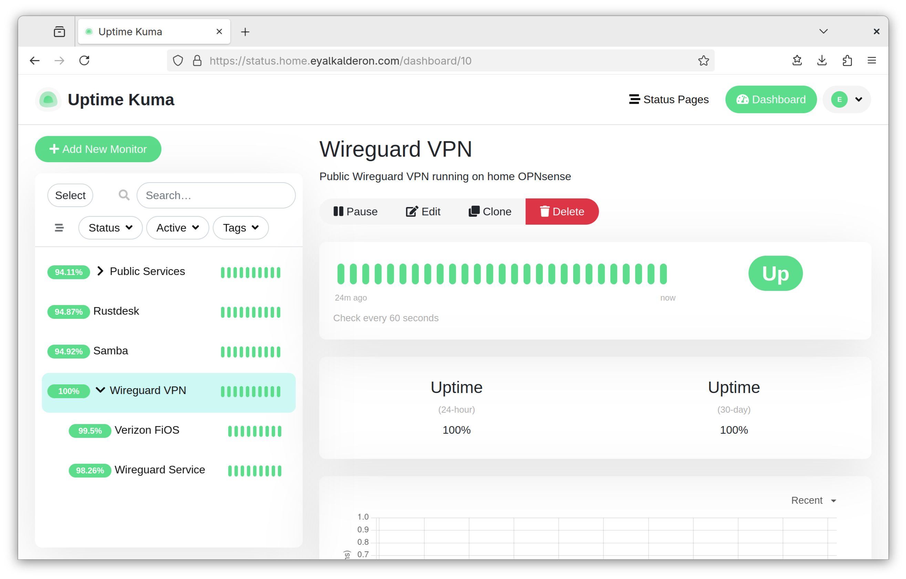

Monitoring Wireguard in Uptime Kuma (with OPNsense)

I use Uptime Kuma to monitor the status of all self-hosted services that run in my homelab. With one notable exception: my public-facing Wireguard VPN, which cannot easily be monitored by Uptime Kuma. Just see the comments on this GitHub issue for instance.
This is because the Wireguard protocol is built on top of UDP instead of TCP. Unlike TCP, UDP is connectionless, which means it completely lacks the notion of a persistent “connection” existing between two peers, much less whether that connection is currently “up” or “down”. Even if I know the precise hostname and port number where my Wireguard VPN is hosted, there is no guarantee that that endpoint will respond to whatever UDP packets I throw at it.
In fact, Wireguard will completely ignore all network traffic that doesn’t originate from an authorized VPN client (or “peer” in Wireguard parlance). This is entirely by design; any protocol chatter conducted prior to the establishment of the VPN tunnel is a potential attack vector, so the Wireguard protocol takes the “loose lips sink ships” approach and simply doesn’t expose health checks at all. This is great for security, but annoying for me trying to build a status monitoring solution.
Initial Approach§
One brain-dead simple approach to checking the health of a Wireguard VPN
endpoint to simply try connecting to it as a client, and then confirm that the
endpoint is functional by pinging one or more hosts across the wg0 network
interface and seeing if they respond. While this heuristic seems sufficient for
my needs and straightforward on the surface, this wasn’t something I wanted to
do.
My Uptime Kuma instance runs inside a Docker container, and I didn’t feel like messing with Docker’s network routing rules. Furthermore, the Wireguard instance I want to monitor runs directly on my OPNsense firewall, which also acts as my home network’s backbone router, and the server where Uptime Kuma is running sits behind that same OPNsense firewall. This poses a problem: the aforementioned health check would fail to catch the very common case where there’s an Internet outage at my home. Because both Uptime Kuma and the Wireguard endpoint would still be able to communicate over LAN, the VPN status check would erroneously remain green.
Eventual Solution§
I decided to take a completely different approach. I wrote two simple Uptime Kuma monitors which query the OPNsense REST API to check whether my home VPN is currently up or down. It boils down to checking the following conditions:
- Check whether the Wireguard service in OPNsense is healthy.
- Check whether the WAN interface’s IPv4 gateway is online.
Here’s how I implemented this.
Configuring OPNsense§
-
Log into the OPNsense management GUI as the root user.
-
Navigate to
System>Access>Users. -
Create a new unprivileged user account named
uptime-kuma. You could skip this step and use the existing root account instead in later steps, but I would strongly discourage that. -
Create a new API key for the
uptime-kumauser by clicking the small button with the icon resembling a movie ticket, titled “Create and download API key for this user”. -
This opens a dialog prompting you to save a new text file titled
$HOSTNAME_$USER_apikey.txt. This text file contains two lines of the form:key=JS/mNJWMxquktkUrqDZGWUMyuBpsnNPzlxOdYtLq/RnBJqHWMFBApAeaitVQcaTbqGuzPMZdPFzdaYlp secret=LsJqFYgTXqXoFjyRReLlUxeyyMIMtyDjoCChJIZwE+eEjUMOF/tSPsKcUiXZzdKVsOkej/UWLCJWEBqbSave this file locally for the time being, but be prepared to securely delete it later once you’re finished configuring Uptime Kuma.
WARNINGBoth values for
key=andsecret=shown above are just randomly generated nonsense used purely for demonstration purposes. With that said, they do visually resemble valid OPNsense API keys.I’m sure this doesn’t need to be said, but please do not leak your actual API keys to the web!
-
Confirm the API key works as expected by running the following
curlcommand in an open terminal:curl -k -u "$(cut -d '=' -f 2 ./path_to_apikey.txt | tr '\n' ':')" https://firewall.yourdomain.com/api/wireguard/service/showYou should see some JSON printed to the console enumerating all Wireguard VPN instances and known peers (i.e. clients) and their properties. If all goes well, it’s time to create the new monitors in Uptime Kuma.
Configuring Uptime Kuma§
-
Log into the Uptime Kuma dashboard.
-
Create a new monitor named “Wireguard VPN” with these properties:
Property Value Monitor Type GroupFriendly Name Wireguard VPNClick the
Savebutton to create the monitor. -
Create another monitor named “Internet Gateway” with these properties:
Property Value Monitor Type HTTP(s) - JSON QueryFriendly Name Internet GatewayURL https://firewall.yourdomain.com/api/routes/gateway/statusJSON Query status="ok" and items[name="WAN_GW"].status_translated="Online"Expected Value trueMonitor Group Wireguard VPNReplace
WAN_GWin the JSON query string above with whatever your primary IPv4 or IPv6 gateway is named in OPNsense.1Next, under the Authentication section, select
HTTP Basic Authas the authentication method. Refer back to your$HOSTNAME_$USER_apikey.txtfile created in Step 5 of the Configuring OPNsense section and fill out the following properties:Property Value Username The value of key=in the text filePassword The value of secret=in the text fileClick the
Savebutton to create the monitor. -
Create one more monitor named “Wireguard Instance” with these properties:
Property Value Monitor Type HTTP(s) - JSON QueryFriendly Name Wireguard InstanceURL https://firewall.yourdomain.com/api/wireguard/service/showJSON Query rows[name="Remote-Access"].statusExpected Value upMonitor Group Wireguard VPNReplace
Remote-Acesssin the JSON query string above with the name of the Wireguard instance in OPNsense that you would like to monitor.2 Alternatively, feel free to rewrite the JSON query string to poll whether a specific peer is connected and throw an error if it goes down; whatever you think is best for your own setup.Configure the Authentication section identically to Step 3 from above.
Click the
Savebutton to create the monitor. -
Once all the above done, wait a minute or so for the “Wireguard VPN” monitor and its two child monitors to gradually settle into an all-green “up” state.
You are now ready to add the monitors to your Uptime Kuma status page(s) however you see fit.
Explanation§
Basically, this VPN monitoring approach works according to the approach described above by aggregating the results of two different health checks.
The “Wireguard Instance” monitor reports whether the specific Wireguard instance is active on your OPNsense system and is in healthy state. If your instance is unable to start or is forcibly shut down, or is otherwise, then Uptime Kuma will mark the entire “Wireguard VPN” monitor as “down”.
The “Internet Gateway” monitor reports whether the OPNsense system itself can
access the Internet via the IPv4/v6 gateway you already have set up for
monitoring. If that gateway’s status no longer returns "Online", i.e. due to
an unplugged Ethernet cable or other Internet outage, then Uptime Kuma will mark
the entire “Wireguard VPN” monitor as “down”.
You are now free to customize your Uptime Kuma status page to either display all three monitors or only the top-level “Wireguard VPN” group monitor, depending on how granular you would like your reporting to be. This same flexibility extends to the notifications and alerting options as well. For instance, you might want to update the “Wireguard Instance” monitor to send a different alert notification if the service is undergoing a graceful restart versus a permanent outage.
Epilogue§
I should really write a separate post diving into the hardware I’m currently using to power the extremely overkill 10 Gbps network I have at home, including the tiny-but-mighty DIY OPNsense router acting as the backbone behind it all. I’m pretty proud of it when considering the space constraints of the small network closet in my home. Perhaps some other day…